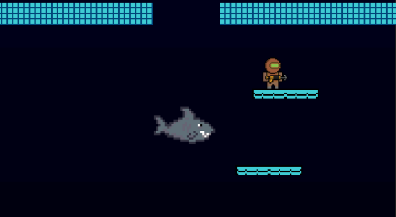

Bobby Pellegrino
Portfolio
About Me
I originally was at Finger Lakes Community College, but I am now a Game Design and Development student at RIT. This page showcases various game development-related projects I have worked on.
Game Projects
Oxygen Search
I made this game at Finger Lakes Community College in CSC 141, Introduction to the Game Industry.
It's a 2D vertical platformer created in Unity. You are stuck at the bottom of the ocean and it's your goal to make it to the surface
while avoiding sharks and other sea creatures along the way. Additionally, you have to make sure you don't lose all your oxygen,
or else you lose. I worked in a group on this project. I contributed with the programming and design, along with making the music and
generating sound effects. If you want to know more specific details of what I did, check out
this site.
You can play the game here.
Space Aces

I also made this game at Finger Lakes Community College, specifically in CSC 241, Fundamentals of Game Design. It is a multiplayer shoot-em-up created in Unity.
The game has 2 players work together to shoot at enemies and avoid their attacks while competing for a high score.
This was also a group project. I was the lead programmer, and I also created the music and sound effects.
Additionally, for this project, I was effectively acting as the producer/project manager as well.
I was making sure that we had a plan, knew what everyone was doing, and made sure to get it in on time.
You can play the game here.
Marble Zone Remixed

This is a mod I made for the Mario and Sonic fan game Sonic Boll. This 2-level mod takes Marble Zone from the original Sonic the Hedgehog(1991) and combines it with several elements from the original Super Mario Bros.
The levels have been combined and stripped down to 2 instead of 3, as well as becoming much more streamlined. Being placed into a more Mario environment allows the level design to work well, since it's more platforming based.
You can check out the mod's GameBanana page here.
Maple Defense

This is a concept for a game that I created while I was in the Fundamentals of Game Design class at FLCC. It would be a 2D run-and-gun platformer. This game has you playing as a secret agent working for the New York State Department of Forestry where you are tasked to stop the Canadian Mounties from stealing upstate New York's maple trees.
You can check out the concept here.